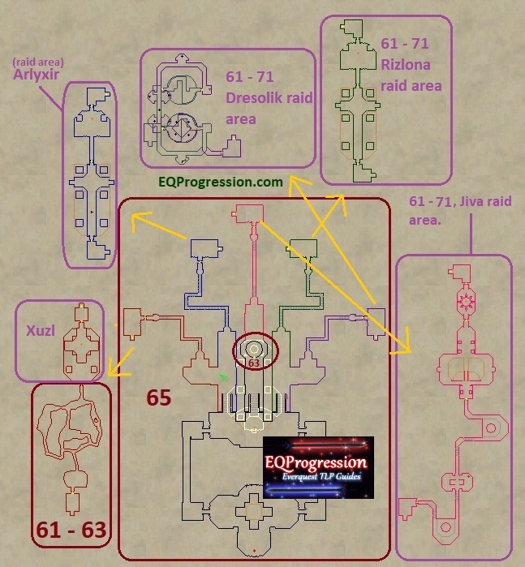
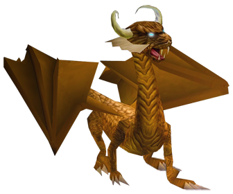
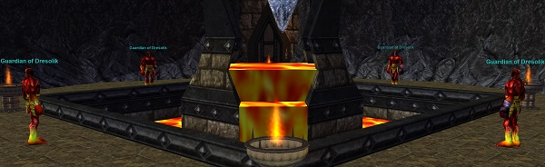
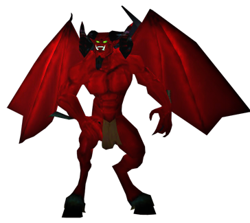
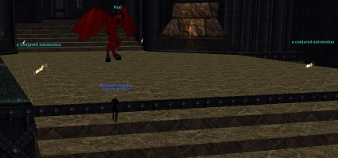
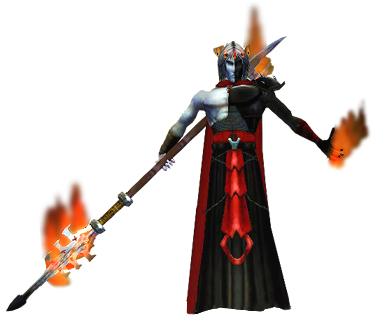
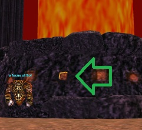
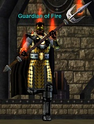
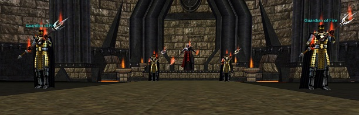
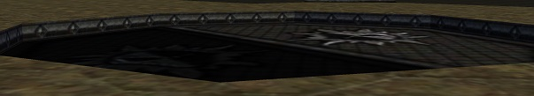

Tower Overview
The Tower holds five named mobs, each required for access to Solusek Ro's chamber (all can be skipped for Planar Flagging as a whole). Respawn is estimated at 2-3 days; every one of them can also be spawned via Agent of Change.
Arlyxir

Fight Info
Arlyxir can be reached via the second to left staircase of the Tower.
Easy fight, be sure to pre-clear the room.
- 750,000 HP (PQDI; eqprogression estimated 800K MoTM)
- Hits 255–1030 (PQDI; eqprogression estimated 1200+)
- Slowable
Loot
- Collar of Corrupted Flame
- Hooded Sanguine Mantle
- Ornate Chain Tunic Pattern
- Ornate Silk Robe Pattern
- Spectral Parchment
- Glyphed Rune Word
Quarm Script
Sourced from the Quarm server Lua script (solrotower/Arlyxir.lua, SecretsOTheP/quests):
- Every 75 seconds during combat he says “is immolated in flames, and is reborn!” — a full heal plus Searing Flames (spell 1281) on his current target.
- A boundary check runs every 6 seconds; if he strays below Y = 1230 he is teleported back to his spawn point, his hate list is wiped, and he casts Annul Self (spell 2830).
- On death a flaming cauldron (NPC 212411) and three warders of Arlyxir (NPC 212416) are spawned.
| Level | 75 |
|---|---|
| HP | 750,000 |
| Hits | 255 - 1030 |
| Resistances | MR 65 / CR 50 / FR 1000 / DR 50 / PR 50 |
| Special Abilities | Summon, Enrage, Double Attack, Dual Wield, Do Not Equip, Magical Attack, Uncharmable, Unstunable, Unsnarable, Unfearable, Immune to fleeing, Immune to lull effects |
| Can Cast | Unity of Fire |
Cross-referenced from pqdi.cc (Project Quarm Database Interface)
Jiva
Fight Info
Jiva can be reached via the center staircase of the Tower. There is quite a bit of trash in his hallway before reaching him.
- 700,000 HP (PQDI; eqprogression estimated 750K)
- Hits 255–1030 (PQDI; eqprogression estimated 900+, possibly a bit harder)
- Slowable
- Casts Reckless Mutterings (PBAE, 500 DD/-50 ATK, -300 Fire Based)
- Periodically summons some trivial adds. Kill them as they spawn
- Easy fight overall
Loot
- Black Basalt Band
- Jagged Shard of Frozen Flame
- Ornate Broadsword
- Rune Etched Bamboo Bo
- Spectral Parchment
- Glyphed Rune Word
Quarm Script
Sourced from the Quarm server Lua script (solrotower/Jiva.lua + encounters/JivaAdds.lua, SecretsOTheP/quests):
- Every 45 seconds during combat he summons the next add in a fixed rotation of eight — Makin, Adeel, Jiri, Seif, Nabil, Aydin, Cemal, Fahim (NPC IDs 212399–212406) — each appearing at one of eight preset locations.
- Each summon is announced with a unique taunt: “Makin, come to my aid!”, “Adeel, I require your assistance!”, and so on through the eight lines.
- On death a flaming cauldron (NPC 212412) and three warders of Jiva (NPC 212417) are spawned.
| Level | 75 |
|---|---|
| HP | 700,000 |
| Hits | 255 - 1030 |
| Resistances | MR 65 / CR 50 / FR 1000 / DR 50 / PR 50 |
| Special Abilities | Summon, Enrage, Double Attack, Dual Wield, Do Not Equip, Magical Attack, Unmezzable, Uncharmable, Unstunable, Unsnarable, Unfearable, Immune to fleeing, Immune to lull effects |
| Can Cast | Reckless Mutterings |
| Procs | Draught of Jiva |
Cross-referenced from pqdi.cc (Project Quarm Database Interface)
Rizlona

Fight Info
Rizlona can be reached via the second to right staircase of the Tower.
She spawns as a human, but once killed she turns into a dragon.
- 300,000 HP with MoTM (PQDI; eqprogression estimated 250K Human Form / 650K Dragon Form)
- Hits 205–843 (PQDI; eqprogression estimated 1400+ on a 35 HStam tank)
- Slowable
- Casts Flame Song of Ro (PBAE, 850 DoT, -100 Fire Based) in Human Form
- Casts Lava Breath (PBAE, 500 DD / dispel, Fire Based) in Dragon Form
Loot
- Basalt Plated Pauldrons
- Flame Encased Earring
- Ornate Greaves Mold
- Mithril Shod Staff
- Spectral Parchment
- Glyphed Rune Word
Quarm Script
Sourced from the Quarm server Lua script (solrotower/Rizlona.lua + #Rizlona.lua, SecretsOTheP/quests):
- Two phases — the first form's death spawns the second form (#Rizlona, NPC 212407) at the same location.
- Both forms run a boundary check every 6 seconds during combat; if Y falls below 2047 or above 2538 they are teleported back to their spawn point (the second form also re-anchors its guard spot there), their hate list is wiped, and Annul Self (spell 2830) is cast.
- The second form carries a 2.5-hour despawn timer that pauses during combat; when it fires the boss despawns and its respawn point is reset to a 10-minute timer.
- On final death a flaming cauldron (NPC 212413) and three warders of Rizlona (NPC 212418) are spawned.
| Level | 70 |
|---|---|
| HP | 300,000 |
| Hits | 205 - 843 |
| Resistances | MR 65 / CR 50 / FR 1000 / DR 50 / PR 50 |
| Special Abilities | Summon, Enrage, Double Attack, Dual Wield, Do Not Equip, Magical Attack, Unmezzable, Uncharmable, Unstunable, Unsnarable, Unfearable, Immune to fleeing, Immune to lull effects |
| Can Cast | FlameSongOfRo |
Cross-referenced from pqdi.cc (Project Quarm Database Interface)
The Protector of Dresolik
Fight Info
The Protector of Dresolik can be reached via the far right staircase of the Tower. There are trash mobs to clear before reaching his room.

Upon entering his room you’ll see 4x Guardian of Dresolik. They rampage occasionally, are slowable, and hit 900+. They seem to have around 250-300K HP each with MoTM.
Once the 4th one dies The Protecter of Dresolik will spawn.
- 800,000 HP (PQDI; eqprogression estimated 850K-900K MoTM)
- Rampages (rarely)
- Hits 255–1030 (PQDI; eqprogression estimated 1200+)
- Slowable
Loot
- Basalt Greatsword of the Protector
- Gleaming Obsidian Shard
- Mithril Battle Hammer
- Sphere of Encased Flame
- Wand of the Firestorm
- Spectral Parchment
- Glyphed Rune Word
Quarm Script
Sourced from the Quarm server Lua script (solrotower/The_Protector_of_Dresolik.lua, SecretsOTheP/quests):
- A boundary check runs every 6 seconds during combat; if X exceeds 978 or falls below 558 he is teleported back to his spawn point, his hate list is wiped, and Annul Self (spell 2830) is cast.
- He carries a 2.5-hour despawn timer that pauses during combat; when it fires the boss despawns and all four Guardian of Dresolik spawn points are reset to a 10-minute respawn timer.
- On death a flaming cauldron (NPC 212414) and three warders of Dresolik (NPC 212419) are spawned.
| Level | 75 |
|---|---|
| HP | 800,000 |
| Hits | 255 - 1030 |
| Resistances | MR 65 / CR 50 / FR 1000 / DR 50 / PR 50 |
| Special Abilities | Summon, Enrage, Rampage, Dual Wield, Do Not Equip, Magical Attack, Unmezzable, Uncharmable, Unstunable, Unsnarable, Immune to fleeing, Immune to lull effects |
| Procs | Fist of Lava |
Cross-referenced from pqdi.cc (Project Quarm Database Interface)
Xuzl

Fight Info
Xuzl can be reached via the far left staircase of the Tower. There is a fair amount of trash before reaching his room.

You’ll want to pull/split some of the flaming swords (a conjured automoton) trash mobs out before pulling this guy. They have 130K HP, hit 1300+, and flurry. They are slowable. They are harder than Xuzl himself but have less HP.
- 600,000 HP (PQDI; eqprogression estimated 650K)
- Hits 255–1030 (PQDI; eqprogression estimated 1200+, possible a bit higher)
- Slowable
- Summons trivial pets
Loot
- Circular Shield of the Blaze
- Lance of the Flame Knight
- Ornate Breastplate Mold
- Ornate Leather Tunic Pattern
- Spectral Parchment
- Glyphed Rune Word
Quarm Script
Sourced from the Quarm server Lua script (solrotower/Xuzl.lua, SecretsOTheP/quests):
- A boundary check runs every 6 seconds during combat; if Y falls below -914 he bellows in a deep voice, “You shall not distract me from my conjurings!” and is teleported back to his spawn point.
- The same out-of-bounds event wipes his hate list and casts Annul Self (spell 2830).
- On death a flaming cauldron (NPC 212410) and three warders of Xuzl (NPC 212415) are spawned.
| Level | 75 |
|---|---|
| HP | 600,000 |
| Hits | 255 - 1030 |
| Resistances | MR 65 / CR 50 / FR 1000 / DR 50 / PR 50 |
| Special Abilities | Summon, Enrage, Double Attack, Dual Wield, Do Not Equip, Magical Attack, Unmezzable, Uncharmable, Unstunable, Unsnarable, Unfearable, Immune to fleeing, Immune to lull effects |
| Can Cast | Wrath of Xuzl |
Cross-referenced from pqdi.cc (Project Quarm Database Interface)
Solusek Ro

Fight Info
In the middle of the zone you’ll find the click up to his room. Click on the extra shiny orange square to zone up.

Once up top you’ll be immediately aggroed by 2x Guardian of Fire. There are 6 total. Clear them all to prepare for the boss fight.

Guardian of Fire Info
- Level 73
- Hits 1300+
- Slowable
- Casts Unity of Fire: 35 pt DS
Solusek Ro
- Level 80
- Hits 634–1913 (PQDI; eqprogression estimated 2.1K+ with 35 Heroic Stamina, expect 2.5K+ if not geared)
- Slowable
- Rampages
- 850,000 HP (PQDI; eqprogression estimated 900K MoTM)
- Casts Solar Flame (Single Target, -2000 DD, -400 Fire Based)
- Casts Solar Winds (Targeted AE, – 1000 DD/50 ATK, -400 Fire Based)
- Casts Corona of Sol (Self Buff, 150 DS, can be dispelled)
Generally it’s best to have ranged DPS stay max range. Healers might not be able to get out of AE range but ranged DPS can. Have group heals ready for the melee.
Once dead, the Planar Projection spawns at the entrance to his chamber. Hail the Planar Projection for your flag! A door in the floor next to the Projection also becomes openable. Make sure to drop down into it to zone into PoFire.


Loot
- Baroque Half Mask of Solusek Ro
- Gauntlets of the Burning Prince
- Gold Runed Mithril Knife
- Raiment of the Fire Son
- The Orb of the Sun
- Spectral Parchment
- Glyphed Rune Word
Quarm Script
Sourced from the Quarm server Lua script (solrotower/Solusek_Ro.lua, SecretsOTheP/quests):
- An anti-cheat check runs every 30 seconds during combat; if he drops below the arena floor (Z < 240) while under 50% HP, all unengaged Guardians of Fire (NPC type 212041) teleport to him and he heals for 100,000.
- On death a loot container (NPC 212420) is spawned and signaled with the ID of whoever had kill rights.
| Level | 80 |
|---|---|
| HP | 850,000 |
| Hits | 634 - 1913 |
| Resistances | MR 65 / CR 50 / FR 1000 / DR 50 / PR 50 |
| Special Abilities | Summon, Enrage, Rampage, Dual Wield, Do Not Equip, Magical Attack, Unmezzable, Uncharmable, Unstunable, Unsnarable, Unfearable, Immune to fleeing, Immune to lull effects |
| Can Cast | Corona of Sol, Solar Flame, Solar Winds |
Cross-referenced from pqdi.cc (Project Quarm Database Interface)
Sources: eqprogression.com guide pages — Arlyxir, Jiva, Rizlona, The Protector of Dresolik, Xuzl, and Solusek Ro (Tower of Solusek Ro); pqdi.cc for boss statistics. Videos embedded from YouTube.